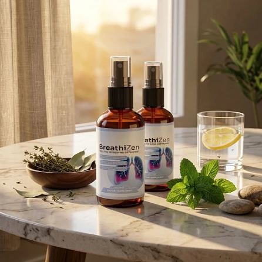
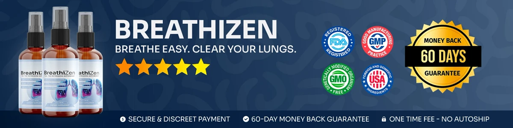

What Is BreathiZen And How Does It Work?
Our verdict starts with the basics: BreathiZen is an oral spray supplement in liquid form, created to support respiratory health, open airways, and relaxed breathing. It is aimed at adults who often feel blocked or heavy-chested when allergens rise, when they spend time in dusty places, or after hectic weeks, and who would like a natural routine they can keep.
The formula is built on three extracts, Ginger root, Mullein leaf, and Organic Lemon, taken in one quick serving each day. Together they are meant to support comfortable, unforced breathing and the body's natural respiratory wellness.
On the official website, the blend is described as delivering herbal and nutritional support with the lungs in mind. Its main practical advantage is that a single bottle can replace a mix of teas, drops, and other products.
The tone of the product is calm rather than flashy. BreathiZen takes an herbal, gradual approach: instead of promising immediate results, it relies on daily servings to support respiratory comfort and clearer airways over the following weeks.
Testimonials on the official website describe breathing more easily through the nose and feeling less tightness in the chest, and some users mention more energy for daily life. Not everyone responds the same way, and hydration, movement, and a cleaner home environment also influence how you feel.
Each order arrives as a 2 oz (60 ml) spray bottle, a convenient size for home, work, or travel.
Per the label, BreathiZen is manufactured in the USA in an FDA-registered facility with ingredients sourced worldwide. It is formulated for regular daily use by adults who want natural lung support without a prescription, with a stated focus on safety, quality, and purity.
BreathiZen Ingredients
Here is what the label tells us. One serving of BreathiZen (4 sprays, 0.60 ml) provides a 154 mg proprietary blend of botanical extracts, according to the Supplement Facts panel on the label pictured on the official order page:
Organic Lemon Extract: Contributes vitamin C and antioxidants, included to support the immune system and to give the spray its fresh taste.
Ginger Root Extract: Derived from Zingiber officinale, a root valued in traditional practices, included to support respiratory comfort and a normal airway response.
Mullein Leaf Extract (10:1): Taken from Verbascum thapsus and described on the official website as soothing for the airways, included to support clear, easy breathing.
These ingredients are paired to support respiratory wellness and healthy lung function. A point worth noting: the official sales page and another version of the label also include Cordyceps militaris, a mushroom extract, and bromelain, an enzyme from pineapple, so always check the label on the bottle you receive. Inactive ingredients are purified water, glycerin, natural flavors, citric acid, potassium sorbate, and sodium benzoate.
The official website states that the spray has no artificial stimulants, positioning BreathiZen as a clean, non-prescription choice for daily lung support.
BreathiZen Side Effects
On safety, our verdict is reassuring: BreathiZen is generally well tolerated. It was made for adults across a wide range of ages and routines who want a natural, measured way to support the respiratory system, especially those who prefer a quick daily habit for easy breathing and lung comfort over aggressive solutions.
The official website describes the ingredients as naturally derived, without artificial stimulants or harmful chemical additives, and the label says the product is made in the USA in an FDA-registered facility, which suggests consistent quality and care.
We found no widespread reports of serious side effects, and BreathiZen is broadly considered a gentle, well-tolerated spray. Since ginger and lemon are in the blend, people with a sensitive mouth or stomach, or with allergies to any listed ingredient, should introduce it carefully and stop if they feel irritation. It is not intended to diagnose, treat, cure, or prevent any disease, and it is not a replacement for an inhaler or prescribed treatment.
The label tells pregnant or nursing women, anyone under 18, and people with a known medical condition to speak with a physician before using BreathiZen. The official website adds that this is especially relevant for people who take medication for asthma, COPD, or high blood pressure.
BreathiZen Dosage
The recommended amount of BreathiZen is 4 sprays a day, in a single serving, per the label. It is a liquid oral spray in a 2 oz (60 ml) bottle, which means no capsules, no powders, and nothing to prepare.
To take it, shake the bottle thoroughly and spray 4 pumps (0.60 ml) directly into the mouth or onto the tongue once daily. The official website advises using it in the morning, ideally before your first meal, at roughly the same hour every day.
Our advice is to focus on regular, uninterrupted use. Respiratory support builds over time, so the official website positions BreathiZen as a continuous daily formula, and the label states that each bottle holds 100 servings.
The routine is intentionally simple, with no multiple doses or special timing. One morning serving, along with good hydration, regular exercise, and less exposure to dust and smoke, is what the manufacturer recommends.
Never exceed the recommended dose, and follow the directions printed on your bottle. Store it away from light, heat, and humidity, and do not use it if the safety seal is broken. BreathiZen is meant to be used consistently as part of healthy daily habits.
BreathiZen – Refund Policy
The verdict on the guarantee is positive but comes with conditions. Every BreathiZen purchase is covered by a 60-day guarantee from the date of purchase, so you can test it before deciding.
According to the official refund policy, a refund can be requested only after a minimum trial of 30 days and must be initiated within 60 days of the purchase. Only sealed bottles are eligible, shipping and customs fees are not refundable, the customer pays for return shipping, and a 20% restocking fee is deducted from the total.
How to proceed: email customer support to request an authorization code and follow the return instructions provided. When the items are received and checked, the refund is issued to the original payment method, followed by a confirmation email.
Customer support: contact@customercs.com, the email shown on the product label. The team typically responds within 48 business hours.
Refund timeline: after processing, the amount may take 5 to 10 business days to appear on your statement, depending on your bank or card company.
Because the refund policy is fully published on the official website, we recommend reading it before ordering BreathiZen and keeping your order confirmation in case you need it later.
BreathiZen Customer Reviews
-
 Jessica Martinez — Austin, TXVerified Purchase – 6 Bottles
Jessica Martinez — Austin, TXVerified Purchase – 6 Bottles
“I’ve struggled with seasonal congestion for years, and it always made me feel exhausted and foggy. Since I started using BreathiZen, I can actually breathe clearly through my nose again. It’s like a weight has been lifted off my chest. I use it every morning, and my entire day feels different — more energy, more focus, just better overall.”
-
 James Miller — Chicago, ILVerified Purchase – 6 Bottles
James Miller — Chicago, ILVerified Purchase – 6 Bottles
“I quit smoking three years ago, but my lungs never felt the same. I’d get winded going up stairs and always had this tightness in my chest. BreathiZen changed everything. Within two weeks, I noticed I could take deeper breaths without that uncomfortable feeling. Now I actually look forward to my morning walks instead of dreading them.”
-
 Samantha Lee — Miami, FLVerified Purchase – 6 Bottles
Samantha Lee — Miami, FLVerified Purchase – 6 Bottles
“My allergies used to control my life — constant sniffling, chest tightness, and I could never sleep well because I couldn’t breathe through my nose. A friend recommended BreathiZen, and honestly, I was skeptical. But after just a few days, I noticed a real difference. Now I sleep through the night and wake up actually feeling rested. It’s been a game-changer.”
BreathiZen – Where To Buy
Our recommendation is to buy BreathiZen from its official website, which is the only sales channel the manufacturer lists. The official website does not send shoppers to marketplaces such as eBay, Walmart, or Amazon.
Third-party offers may look the same, but they cannot be verified as genuine, and their storage and age are unknown, which raises doubts about freshness, safety, and quality, particularly for a liquid botanical spray. Purchases made outside the official source may not be covered by the 60-day guarantee.
That is why most customers prefer ordering BreathiZen directly from the official website. Buying from the source ensures the authentic original product, made in the USA, plus customer support and the complete guarantee. The official website also says each order is a one-time purchase with no automatic renewals or hidden fees.
Before completing your order, confirm that you are on the official BreathiZen website to avoid counterfeit batches and receive the genuine formula.
To ensure you’re getting the authentic product, most users choose to visit the official website.
Is BreathiZen A Scam?
Final verdict: based on the official website and the label, BreathiZen does not appear to be a scam. It is a real oral spray supplement, sold through an established retailer, made to support open airways, respiratory health, and relaxed breathing with daily use.
The label lists Organic Lemon extract, Mullein leaf extract, and Ginger root extract in a 154 mg blend on the Supplement Facts panel. These are well-known natural ingredients, and each is named openly, even though the amount of each extract is not published.
The label also says BreathiZen is made in the USA in an FDA-registered facility, using ingredients sourced from around the world, with emphasis on consistency, purity, and safety.
Reviews on the official website point to easier breathing and a lighter chest, along with a routine that is quick to follow. Results are personal, and no supplement can guarantee a specific outcome or replace proper medical care.
Orders come with a 60-day guarantee and are one-time purchases, without hidden fees, automatic renewals, or recurring charges. The refund conditions, including the 20% restocking fee and the sealed-bottle rule, are published on the official website.
If you want an easy daily spray to support respiratory comfort and clear breathing, BreathiZen earns a spot on your list, especially when bought directly from the official website.
For those who want to verify product details or check current availability, the official BreathiZen website remains the safest option.

Check Availability On Official Website
